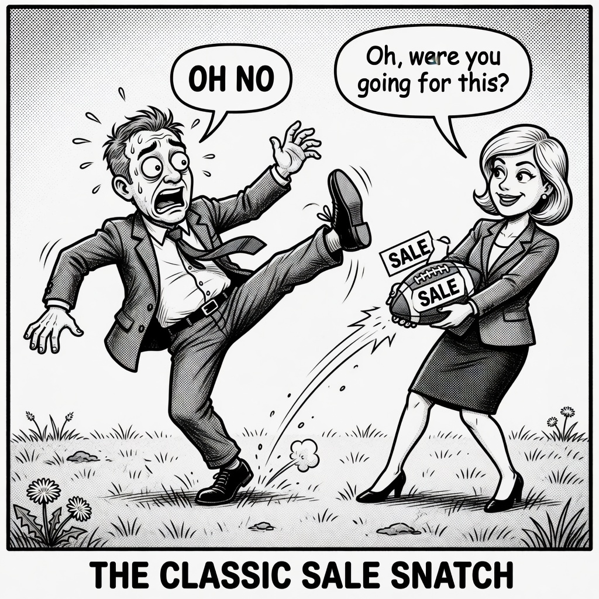

Writings · LinkedIn
Equal commitment, or call the truth early
No one-sided demos. Match commitment, or call the truth early.

Here's the truth: most "sales processes" are one-sided commitments dressed up as collaboration.
The buyer asks for a demo and a proposal.
We say yes. Fast. Eager. Helpful.
And the moment we hand both over, we lose the deal , not always today, but we lose control of it. They can ghost forever with everything they needed and nothing they owed.
I was in a working session with a founding sales team last week on exactly this.
They'd run a strong discovery. Demo on the calendar. Thirty minutes before: "I'm sick."
Maybe she was. Maybe she wasn't bought in. Maybe she never had a path to the person who could actually say yes.
Either way, the process had asked for her time… and almost nothing else.
That's not authentic communication. That's performance.
Authentic is naming the level of commitment on both sides out loud.
You want a demo? Here's what I need to run one that isn't theater: who owns the decision, what "good" looks like, what happens if the demo works.
You want a proposal? Then we both know the next step isn't "think about it." It's a real conversation with the person who can fund the change , or an honest "this isn't a priority," which is a gift.
Equal levels of commitment isn't hardness. It's respect.
It says: I won't waste your calendar with a pitch you can't act on. Don't waste mine with a process that only commits me.
If you're a founder running sales without a system, write this on the wall:
No one-sided demos. No proposals into the void. Match commitment , or call the truth early.
What's the last deal you lost because you committed first and they never did?